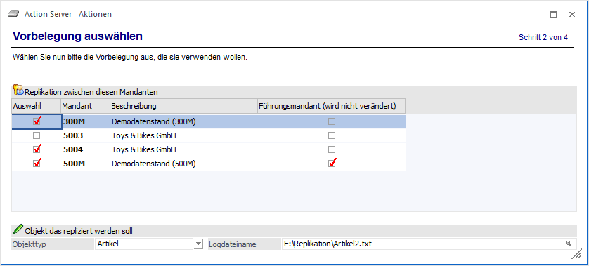
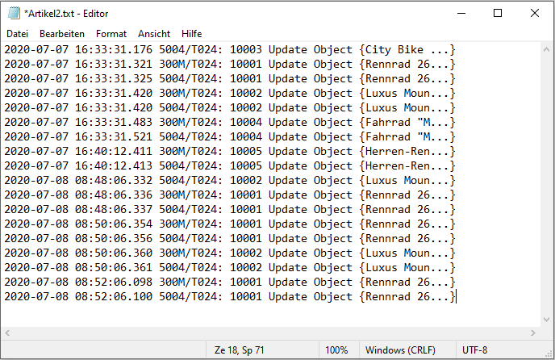
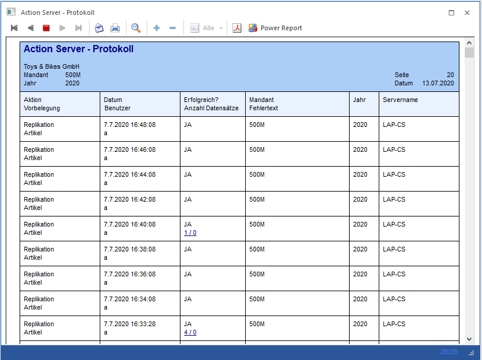

Ø Replikation zw. diesen Mandanten - "Spalte Auswahl"
Durch die Selektion der Checkboxen in der Spalte "Auswahl" können die Mandanten ausgewählt werden, in denen Objekte repliziert werden sollen. Änderungen innerhalb selektierter Mandanten werden auf alle anderen Mandanten der Auswahl repliziert.
Hinweis
Nach einem durchgeführten Replikationslauf sind die Objekte überall identisch, sofern der ursprüngliche Zustand (vor den ersten aufgezeichneten Änderungen) ebenfalls identisch war.
Ø Replikation zw. diesen Mandanten - Spalte "Führungsmandant (wird nicht verändert)"
Bei der Auswahl der Mandanten kann ein Mandant als Führungsmandant gewählt werden. Dieser Mandant erhält somit keine Änderungen von den anderen Mandanten, sondern verteilt seine Änderungen auf diese.
Hinweis
Erfolgen jedoch in einem anderen Mandanten Änderungen zu einem späteren Zeitpunkt, dann gilt die Regel, dass diese bevorzugt werden.
Ø Objekttyp
Der Action Server unterstützt im Zusammenhang mit der Aktion "Replikation" folgende Objekttypen:
ü Mitarbeiter
ü Artikel
ü Personenkonten
Hinweis
Bevor die Replikation durchgeführt werden kann, muss in der WinLine START > PARAMETER > EINSTELLUNGEN im Register ADMIN in der Tabelle "Alle Exportvariablen auditieren" selektiert worden sein (diese Checkbox ist als Standard nicht aktiviert.) Dies ermöglicht das Setzen aller notwendigen Trigger für eine zukünftige Replikation.
Wenn nur Änderungen repliziert werden (und keine neuen Datensätze), dann reicht es aus, wenn nur jene Variablen auditiert werden, die auch geändert werden.
Ø Logdateiname
Neben der Auswahl des zu replizierenden Objekts kann optional eine Logdatei angegeben werden. Dort werden durchgeführte Änderungen hineingeschrieben.

Über die Ausgabe "Action Server - Protokoll" (START > ACTION SERVER > PROTOKOLL) gibt es später die Möglichkeit, mit einem Klick auf den DrillDown (Spalte "Erfolgreich? Anzahl Datensätze") Änderungen direkt extern in der zuvor definierten Logdatei (Beispiel s. o.) ausgeben zu lassen.

Hinweise
Es werden nur jene Änderungen repliziert (und in der Log-Datei dokumentiert), die seit der letzten Replikation angefallen sind. Wurde noch nie etwas repliziert, dann setzt der erste Aufruf nur das Startdatum und repliziert noch keine Werte. Für jeden durchgeführten Replikationslauf wird pro gewähltem Objekt (Mitarbeiter, Artikel und Personenkonten) gemerkt wann der letzte Replikationslauf durchgeführt wurde.
Bei der ersten durchgeführten Replikation (wenn es noch kein gespeichertes Datum für das Objekt gibt), wird der aktuelle Zeitpunkt angenommen. Das bedeutet, dass beim ersten Lauf nichts repliziert wird, sondern nur der Ausgangszeitpunkt für die erste echte Replikation gesetzt wird. Bei jedem weiteren Aufruf der Replikation wird exakt der Zeitraum von der letzten Replikation bis zum aktuellen Zeitpunkt berücksichtigt und der aktuelle Zeitpunkt zurückgeschrieben.
Die Mandanten können in unterschiedlichen Datenbanken, oder auch auf unterschiedlichen Servern existieren. In diesem Fall werden die Variablenauditeinträge der Mandanten in eine temporäre Tabelle kopiert und die Auswertung über diese Tabelle durchgeführt.
Nach der Definition der Aktionsdetails erfolgt im nächsten Schritt die Angabe zu "Benutzer und Mandant".